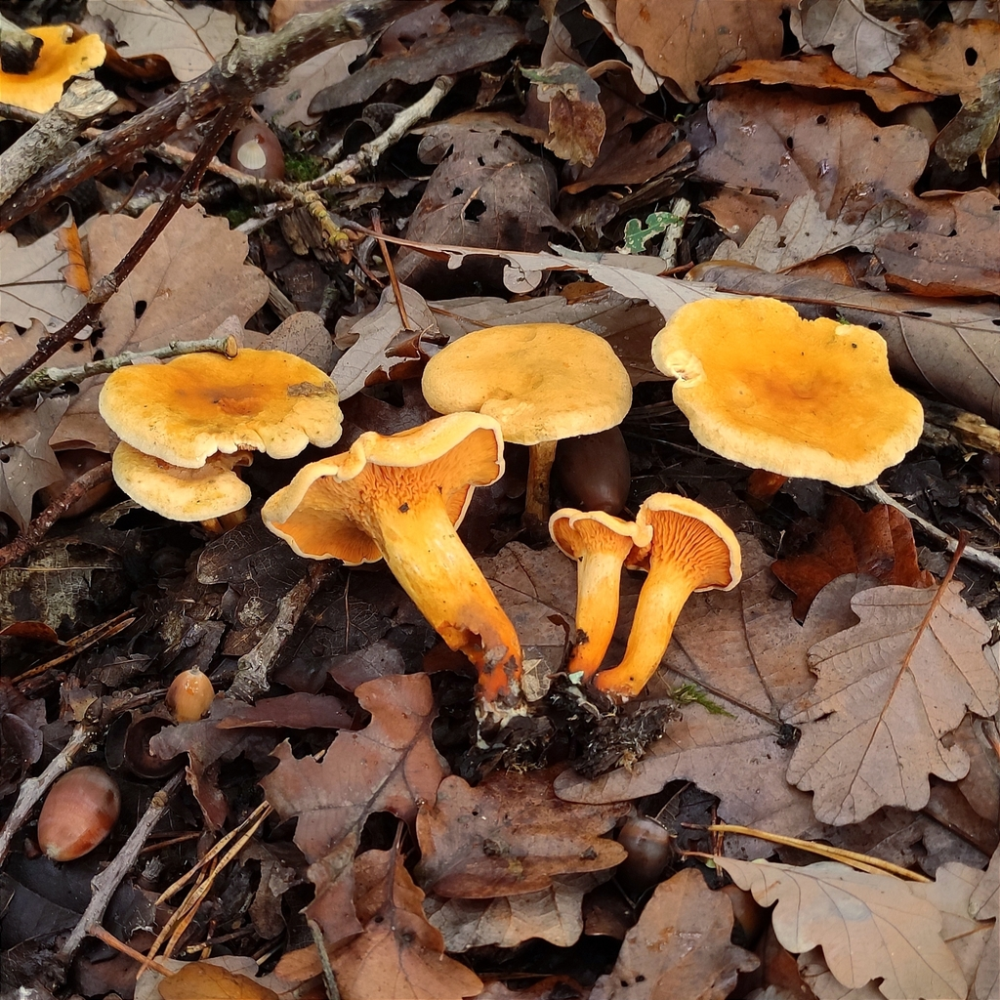
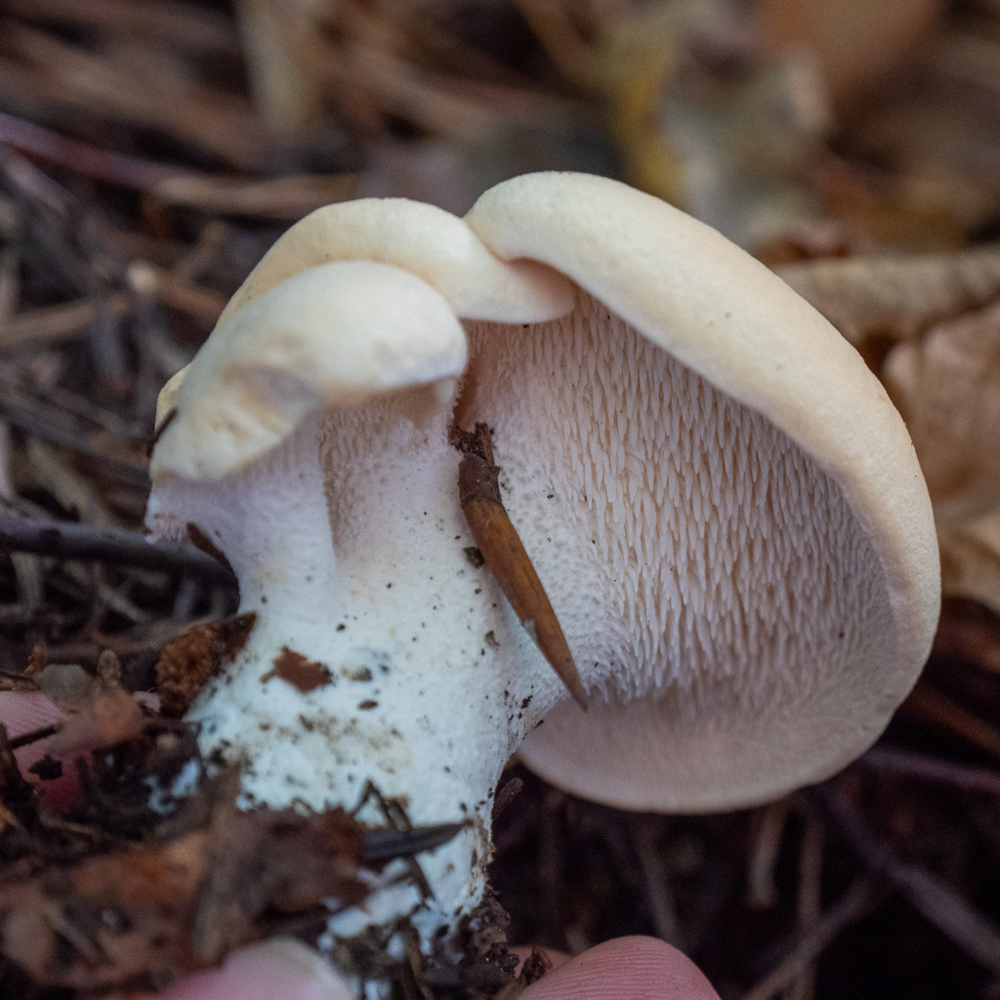
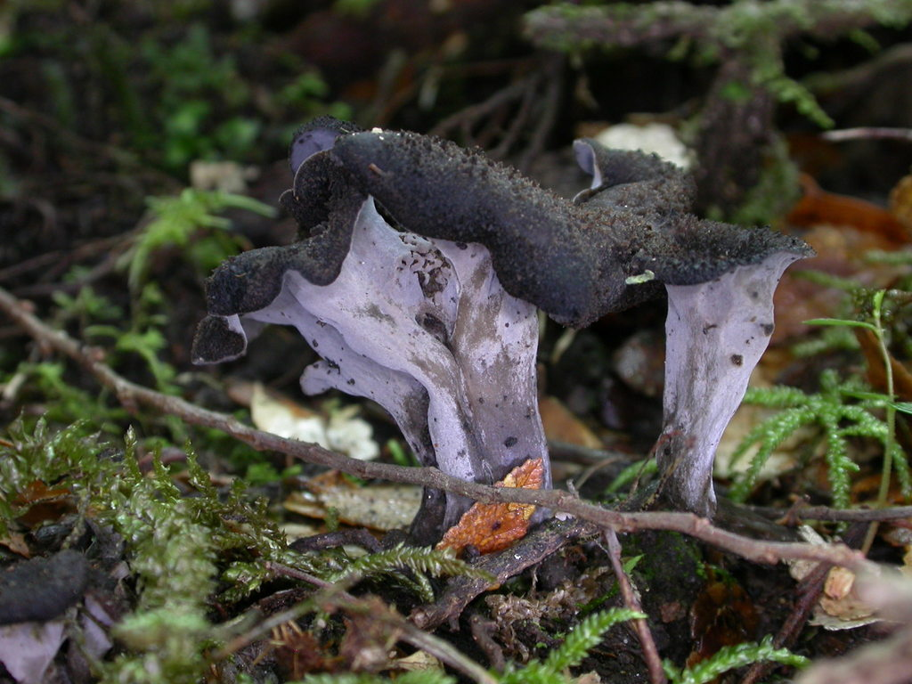
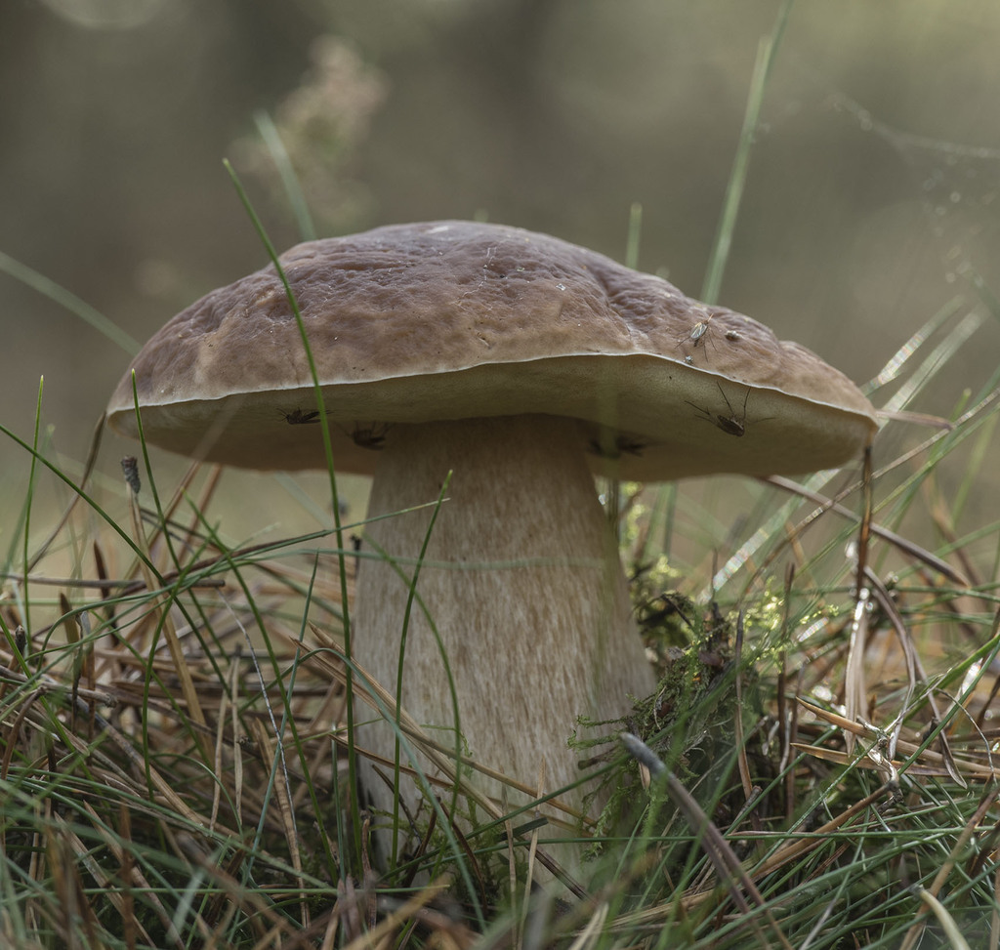
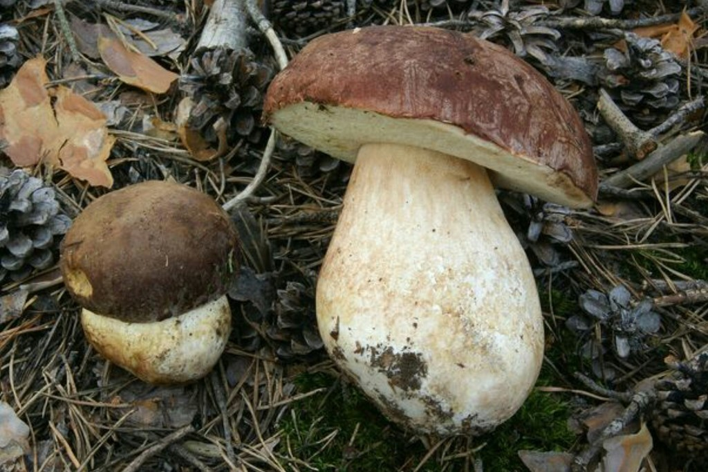
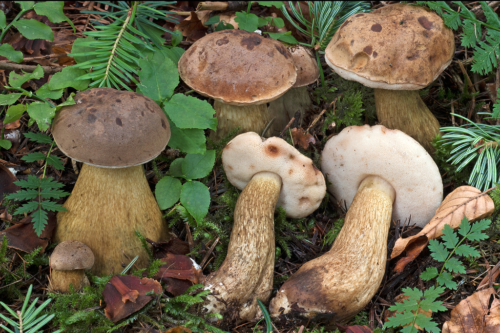

05. The "Safe Five" Beginner Mushrooms of Southern Finland
If you are new to foraging in Finland, start exclusively with these five species. Each has unmistakable macroscopic characteristics (false gills, hollow funnels, ventral spines, or sponge-like pores) and no deadly lookalikes when following simple verification rules.
▶️ Beginner Masterclass: Beginners Guide to Wild Mushroom Foraging 2024 Channel: Mushroom Wonderland (Aaron Hilliard) (Duration: 24:13) Essential field orientation for beginners: why rigid baskets are crucial for spore dispersal, proper mushroom knife handling and field cleaning, tree mycorrhizal symbiosis (spruce, pine, birch), 100% positive identification rules, and the fundamental "dry sautéing" technique.
1. Golden Chanterelle ( Cantharellus cibarius / Keltavahvero / Kantarelli)
Finnish Rating:*** Erinomainen ruokasieni (Choice Edible)

Identification Checklist
- Cap: 3–10 cm across. Bright egg-yolk yellow to golden orange. Irregular, undulating, wavy margin that curves downwards when young, flaring outward into a trumpet shape as it matures.
- Under-Cap Structure: FALSE GILLS (Poimut). These are not true, thin, paper-like gills! They are thick, blunt, vein-like ridges (poimut) that repeatedly fork and branch, running significantly down the stem (decurrent). They cannot be cleanly scraped away from the cap.
- Stem: Firm, solid, tapering toward the base, colored exactly like the cap.
- Flesh: Dense, fibrous, pale cream to pale yellow inside. Never hollow in fresh specimens.
- Smell: Distinctly fruity, resembling ripe apricots or mirabelle plums.
Helsinki Habitats & Season
- Habitat: Mossy birch-spruce edges, along forest paths, sandy trail margins, moss-covered bedrock benches in Keskuspuisto (Paloheinä), Nuuksio, and Luukki.
- Season: July to October (peak in August).
Lookalike Check: False Chanterelle ( Hygrophoropsis aurantiaca / Valekantarelli)
Status:* Edible but bland / Not poisonous, but inferior.

| Feature | Golden Chanterelle (Keltavahvero) | False Chanterelle (Valekantarelli) |
|---|---|---|
| Underside | Blunt, thick, branched ridges (poimut) | Thin, sharp, crowded true gills (oikeat heltat) |
| Color | Egg-yolk yellow, golden yellow | Intense electric orange to tawny reddish-orange |
| Flesh | Firm, meaty, pale yellowish-white | Soft, flexible, thin, orange flesh |
| Stem | Solid, thick, yellow throughout | Slender, often darker/brownish near the base |
| Smell | Fresh fruity apricot fragrance | Mild, mushroomy or indistinct |
2. Funnel Chanterelle / Yellow Foot ( Craterellus tubaeformis / Suppilovahvero)
Finnish Rating:*** Erinomainen ruokasieni (Choice Edible)

Identification Checklist
- Cap: 2–6 cm. Yellow-brown, grey-brown, or olive-brown. Distinctly trumpet-shaped with a deep central funnel that pierces straight into the hollow stem.
- Underside: Greyish-yellow to ash-grey ridges (poimut), blunt, branched, running down the stem.
- Stem: 3–8 cm tall, 4–8 mm wide. Bright golden-yellow or yellowish-orange, flattened or grooved, and COMPLETELY HOLLOW like a drinking straw.
- Flesh: Thin, pliable, fragrant, yellowish.
- Smell: Pleasant, earthy, slightly spicy and fruity.
Helsinki Habitats & Season
- Habitat: Deep, moist feather-moss blankets (Pleurozium, Hylocomium) in mature Norway spruce forests. Often hidden beneath fallen leaves.
- Where to Find: Sipoonkorpi (legendary hauls near Bisajärvi and Kuusijärvi), Pitkäkoski, Vaakkoi.
- Season: September to late November (even after multiple sub-zero frosts!).
IMPORTANT: Safety Check against Deadly Webcap ( Cortinarius rubellus):
Because Funnel Chanterelles grow hidden deep inside damp moss cushions where Cortinarius rubellus also lives, NEVER grab handfuls of mushrooms blind.
- Funnel Chanterelles have a completely hollow, yellow tube stem and a perforated funnel cap.
- The Deadly Webcap has a solid, cinnamon-brown stem with yellow zigzag bands and a pointed cone cap.
3. Wood Hedgehog ( Hydnum repandum & Hydnum rufescens / Vaaleaorakas & Rusko-orakas)
Finnish Rating:*** Erinomainen ruokasieni (Choice Edible)

Identification Checklist
- Cap: 4–15 cm across. Creamy ivory, pale buff, or biscuit-colored (H. repandum); reddish-terracotta in the smaller H. rufescens. Irregular, thick, firm, slightly undulating.
- Under-Cap Structure: SPINES / TEETH (Orakset). Instead of gills or pores, the underside is covered with thousands of tiny, fragile, soft white-to-cream spines (2–6 mm long).
- Stem: Thick, solid, off-white, often eccentric.
- Flesh: Crisp, brittle, snapping like chalk. Pure white, bruising slowly yellowish-orange.
- Culinary Advantage: Extremely resistant to maggots and insect larvae; almost 100% of collected specimens are solid and clean.
Helsinki Habitats & Season
- Habitat: Mossy spruce hollows, shaded birch-spruce slopes in Luukki, Sipoonkorpi, Keskuspuisto (Pirkkola).
- Season: August to October.
4. Black Trumpet / Horn of Plenty ( Craterellus cornucopioides / Mustatorvisieni)
Finnish Rating:*** Erinomainen ruokasieni (Choice Edible - "Black Gold")

Identification Checklist
- Fruitbody: 3–8 cm wide, 4–10 cm tall. Entire mushroom is a thin, hollow, trumpet-shaped horn flaring open at the top with a wavy, ragged, rolled-back rim.
- Color: Soot-black, charcoal, or dark ash-grey when damp; drying to pale grey or brownish-black.
- Underside / Outer Surface: Smooth or slightly wrinkled, ash-grey, with no gills, ridges, pores, or spines.
- Flesh: Thin, pliable, elastic, dry, dark grey.
- Smell: Intensely aromatic, floral, fruity, reminiscent of dried black truffles.
- Zero Poisonous Lookalikes: There is no toxic mushroom in Northern Europe that looks like a black hollow trumpet.
Helsinki Habitats & Season
- Habitat: Warm, moist, herb-rich deciduous groves (lehto) under European hazel (Corylus avellana), birch, and oak.
- Where to Find: Keskuspuisto (Maunula hazel groves), Petikko, Nuuksio (Kattila slopes).
- Season: August to October.
5. King Bolete / Porcini ( Boletus edulis & Boletus pinophilus / Herkkutatti & Männynherkkutatti)
Finnish Rating:*** Erinomainen ruokasieni (Choice Edible)


Identification Checklist
- Cap: 8–25 cm across. Hemispherical then convex, resembling a toasted bread roll. Pale brown to greasy chestnut (B. edulis), or dark wine-red mahogany (B. pinophilus).
- Under-Cap Structure: PORES / SPONGE (Pillit). A spongy, detachable layer of vertical tubes:
- Stem: Robust, swollen, club-shaped or barrel-shaped. Covered with a fine white raised net pattern (verkkokuvio) near the top of the stem.
- Flesh: Pure white, firm, solid. DOES NOT TURN BLUE OR BLACK WHEN CUT.
- Smell & Taste: Pleasant nutty fragrance, sweet and nutty on the tongue.
Helsinki Habitats & Season
- Habitat: Mature spruce-blueberry forests (tuore kangas) for B. edulis; sandy pine heaths (kuiva kangas) for B. pinophilus.
- Where to Find: Sipoonkorpi (Kuusijärvi / Bisajärvi), Luukki, Nuuksio.
- Season: August to late September.
Lookalike Check: Bitter Bolete ( Tylopilus felleus / Sappitatti)
Status:O Inedible due to extreme, tongue-numbing bitterness (Not deadly toxic, but ruins an entire stew).

| Feature | King Bolete (Herkkutatti) | Bitter Bolete (Sappitatti) |
|---|---|---|
| Pores (Pillit) | Pure white when young, turning yellowish-green / olive | White when young, turning dirty pink / brownish-pink |
| Stem Netting | Delicate white network on pale brownish background | Coarse, dark brown, prominent raised netting on stem |
| The Taste Test | Touch a tiny piece of raw cap to the tip of your tongue: mild and nutty | Touch a tiny piece to your tongue: violently bitter within 5 seconds (spit it out) |